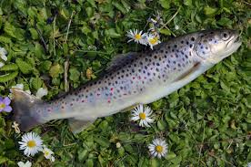
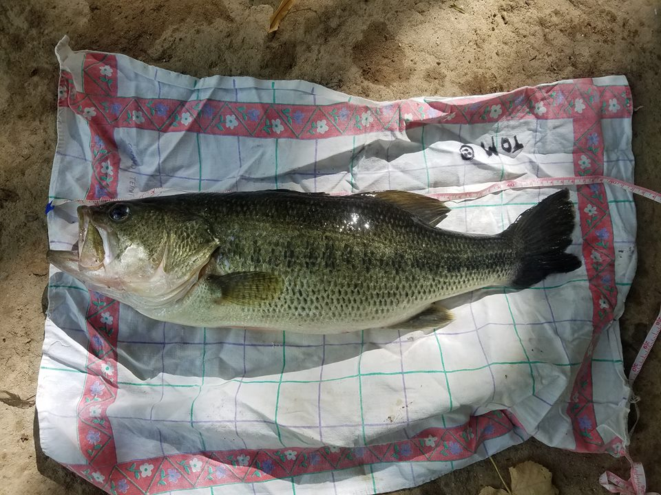
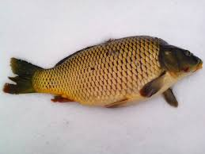
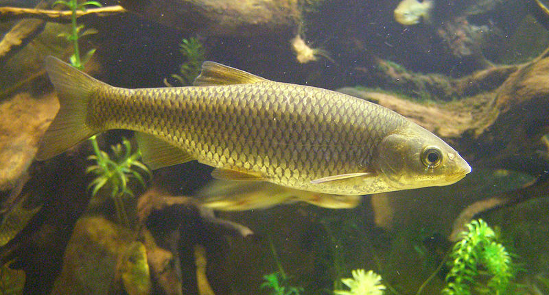
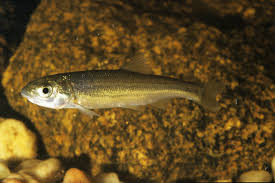
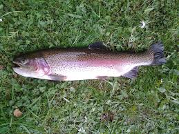
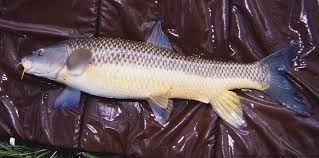
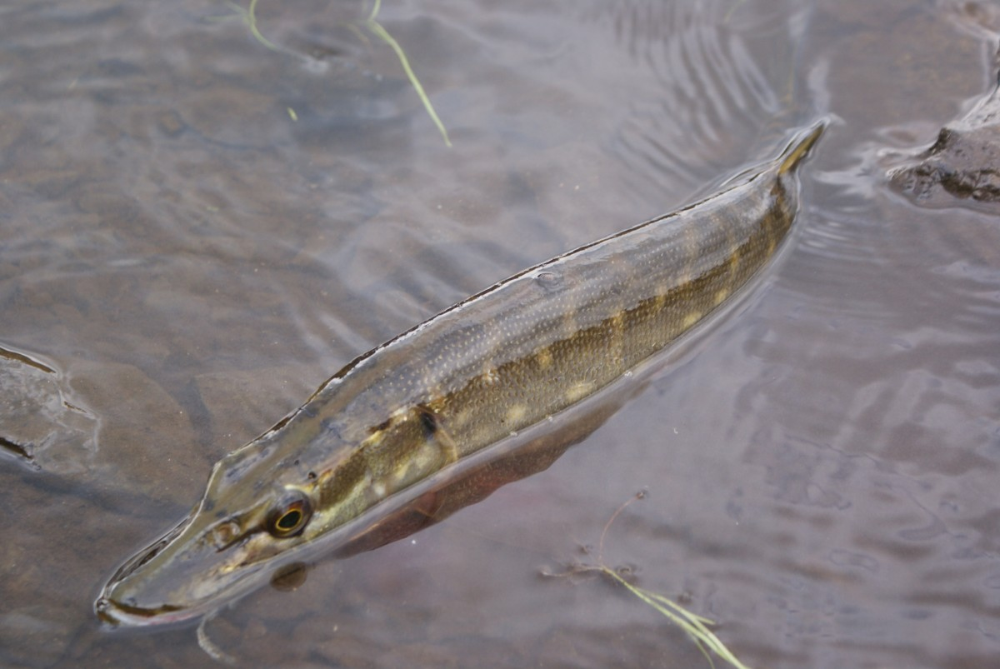
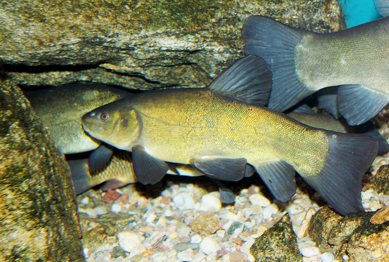

Fauna piscícola en los ríos de León:
Trucha común
- Descripción: Cuerpo alargado para nadar en aguas rápidas. Su longitud máxima suele ser 50cm y se alimenta a base de invertebrados.
- Zona de pesca: Aguas frías y oxigenadas.
- Cebos: Todo tipo de cebo vivo, moscas y cucharillas.
- Distribución geográfica: Todos los ríos de la provincia de León.
Black-Bass
- Descripción: Es de color plateado y verde, más oscuro por su parte superior y no suele medir más de 35cm.
- Zona de pesca: Aguas con poca corriente y con vegetación.
- Cebos: Cucharillas y rapalas.
- Distribución geográfica: Bajo Órbigo, Esla y Cea.
Carpa
- Descripción: Es de color dorado, presenta como el barbo 4 barbas a cada lado de la boca. Se alimenta de vegetal orgánico y no suele superar los 40cm.
- Zona de pesca: Embalses y aguas estancadas.
- Cebos: Toda clase de larvas y cebos preparados.
- Distribución geográfica: Bajo de los ríos Cea, Órbigo, Esla y embalses Luna, Porma y Riaño.
Escallo o Cacho
- Descripción: Grandes escamas de color plateado, su alimento es a base de larvas y otros peces pequeños. No suele superar los 30cm.
- Zona de pesca: Zonas con poca corriente.
- Cebos: Cebos naturales y moscas.
- Distribución geográfica: Todos los ríos de León
Boga
- Descripción: De color plateado, no suele superar los 50cm. Se alimenta a base de pequeños invertebrados.
- Zona de pesca: Aguas tranquilas con piedras en el fondo
- Cebos: Lombriz y larvas.
- Distribución geográfica: Todos los ríos de León.
Trucha arcoíris
- Descripción: Parecida a la trucha común con la cabeza más corta, la diferencia más importante es que tiene una banda lateral de varios colores. No es autóctona de los ríos leoneses.
- Zona de pesca: Aguas frías y oxigenadas.
- Cebos: Todo tipo de cebo vivo, moscas y cucharillas.
- Distribución geográfica: Todos los ríos de León.
Barbo
- Descripción: Su mayor característica es que presenta unas barbas al lado de la boca. Tiene unos grandes labios y su color es entre verde y dorado. No suele superar los 50cm y se alimenta de materia orgánica.
- Zona de pesca: Aguas de poca corriente en los cauces bajos de los ríos.
- Cebos: Todo tipo de cebo natural.
- Distribución geográfica: Ríos del Sur-Este de León.
Lucio
- Descripción: De color verde, cuerpo alargado y aletas grandes y fuertes. Cabeza alargada en forma de pato. boca tiene varias filas de dientes. Este tipo de pez alcanza un gran peso, pero en la provincia se han capturado ejemplares de hasta 11kg de peso.
- Zona de pesca: Zonas tranquilas con abundante vegetación.
- Cebos: Pesca con cucharilla o rapala. La pesca del pez vivo está prohibido.
- Distribución geográfica: En los embalses y las cuencas bajas de los ríos como es Esla.
Tenca
- Descripción: De color marrón y verde, de pequeñas escamas. Tiene los ojos pequeños y una barba a cada lado de la boca. No suele medir más de 40cm.
- Zona de pesca: Aguas profundas, sin corriente y con vegetación
- Cebos: Pesca con cebo natural.
- Distribución geográfica: En la zona sur de los ríos de León.
Identificación de insectos:
Efémeras
No pueden cerrar las alas, mantienen las alas en posición vertical. Insecto muy abundante y compone la gran mayor parte de la alimentación de la trucha. Utilizados en la pesca con mosca seca.
Tricópteros
Tienen dos pares de alas que las pliegan sobre el abdomen en forma de teja. Utilizados en la pesca con mosca seca.
Plecópteros
Poseen cuatro alas que pliegan sobre el abdomen. También se les denomina 'pèrlidos. Utilizados en la pesca con mosca seca.
Dípteros
Moscas y mosquitos componen la mayoría de los insectos que hay por las orillas de los ríos.
Diferentes fases de los insectos:
1- Ninfas
Imitan la fase larvaria de los insectos. Estos se encuentran sumergidos en las aguas de los ríos.
2- Emergentes
No se considera un insecto, es la fase de ascensión a la superficie del agua. Esta es una de las moscas más eficaces cuando es la etapa de este tipo mosca.
3- Adultos
Son los que vuelan y están fuera del agua. Las alas están desarrolladas y extendidas y las patas agrupadas en tres pares.